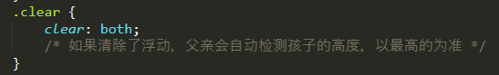
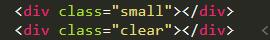
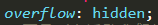
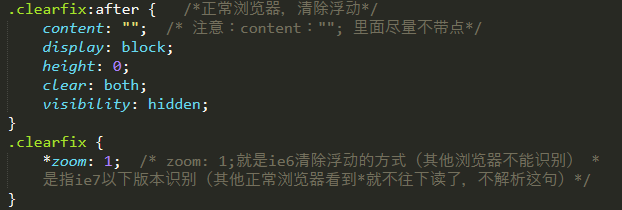
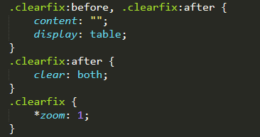

标准流：盒子会各占整行位置。子盒子若是标准流，父盒子虽然没有高度，但是会撑开父盒子高度。
浮动：盒子浮了起来，不会占据原来的位置，若父盒子没有定义高度，则不会撑开父盒子，父盒 子高度为0。（浮动可以让多个块级元素在一行显示，且块与块之间没有空隙，但要注意给父盒子清除浮动，否则父盒子不会被撑开）。
为什么要清除浮动呢？清除浮动的本质是什么？
清除浮动主要是为了解决父级元素因为子级浮动引起的内部高度为0的问题。
清除浮动的方法：
1. 额外标签法：给谁清除浮动，就在其后额外添加一个空白标签 。
优点：通俗易懂，书写方便。（不推荐使用）
缺点：添加许多无意义的标签，结构化比较差。
给元素small清除浮动（在small后添加一个空白标签clear(类名可以随意），设置clear:both;即可）


2. 父级添加overflow方法：可以通过触发BFC的方式，实现清楚浮动效果。
优点：代码简洁（慎重使用，若该父盒子里还有position定位会引起麻烦）
缺点：内容增多时候容易造成不会自动换行导致内容被隐藏掉，无法显示需要溢出的元素。

注意：别加错位置，是给父亲加（并不是所有的浮动都需要清除，谁影响布局，才清除谁。）
3. 使用after伪元素清除浮动：：after方式为空元素的升级版，好处是不用单独加标签了。（较常用）
优点：符合闭合浮动思想，结构语义化正确
缺点：由于IE6-7不支持：after，使用zoom：1，触发hasLayout。

注意：这个也是给父亲添加 clearfix
4. 使用before和after双伪元素清除浮动：（较常用）

注意：是给父亲添加clearfix